Material treatments
Metal · glass · press · cloth · environment
Material treatments
The mark exists to be made in something. Brass, etched glass, blind deboss, bookcloth, powder-coated steel. Each one is a different answer to the same question: how does the wordmark hold when it stops being ink?

ONE PROCESS PER PIECE
NEVER FOIL PLUS DEBOSS PLUS COLOR
NEVER FOIL PLUS DEBOSS PLUS COLOR
THE RULE IS THE ONLY ORNAMENT
NO BORDERS UNLESS THE PIECE IS A PLATE
NO BORDERS UNLESS THE PIECE IS A PLATE
MINIMUM CUT HEIGHT 8MM FOR JJ
BELOW THAT THE SERIFS FILL IN
BELOW THAT THE SERIFS FILL IN
01 · Metal and glass
Hard substrates are where the seal earns its keep. A circle survives being cut into brass in a way a two-line lockup does not, and the ring gives the engraver a registration edge to work against.
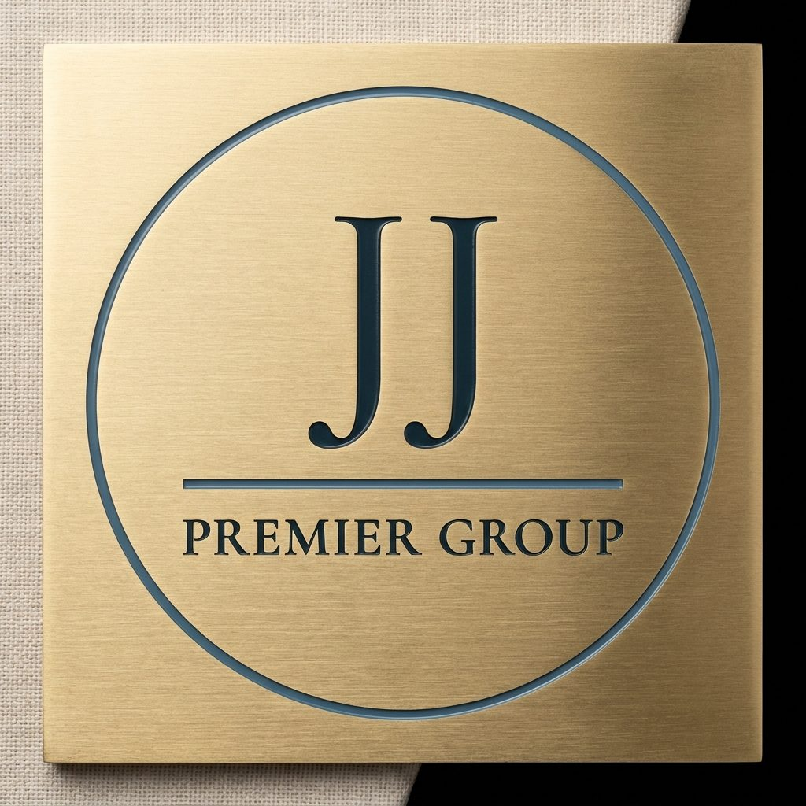
Etched brass plaque
Satin brass, acid-etched and paint-filled in Deep Harbor. The seal is the only lockup that belongs on metal: the ring holds the etch line, and PREMIER GROUP under the rule keeps the plate from reading as a monogram.
SUBSTRATE SATIN BRASS, 3MM
PROCESS ACID ETCH, PAINT FILL #1E3442
SIZE 200 × 200MM · RING STROKE 1.5MM
USE OFFICE ENTRY, CLOSING GIFTS, AWARDS
PROCESS ACID ETCH, PAINT FILL #1E3442
SIZE 200 × 200MM · RING STROKE 1.5MM
USE OFFICE ENTRY, CLOSING GIFTS, AWARDS
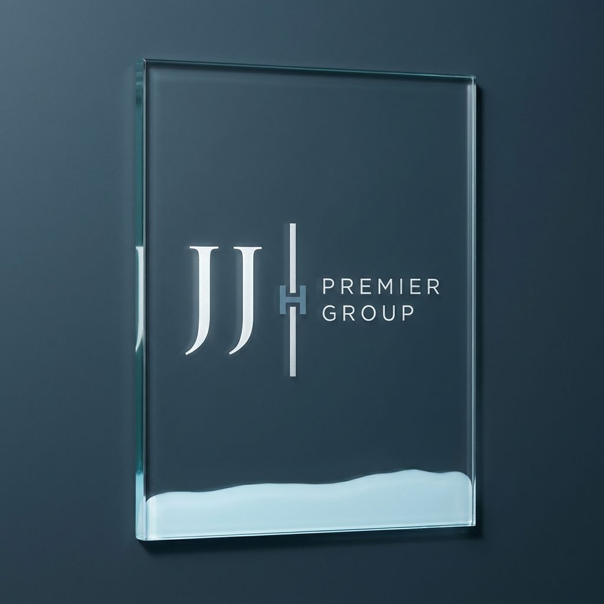
Sandblasted glass, standoff mounted
Frosted lettering on 10mm low-iron glass, held 25mm off a Deep Harbor wall. The shadow behind the letters does the work no ink can.
GLASS 10MM LOW-IRON · STANDOFF 25MM
PROCESS SANDBLAST, SECOND SURFACE
PROCESS SANDBLAST, SECOND SURFACE
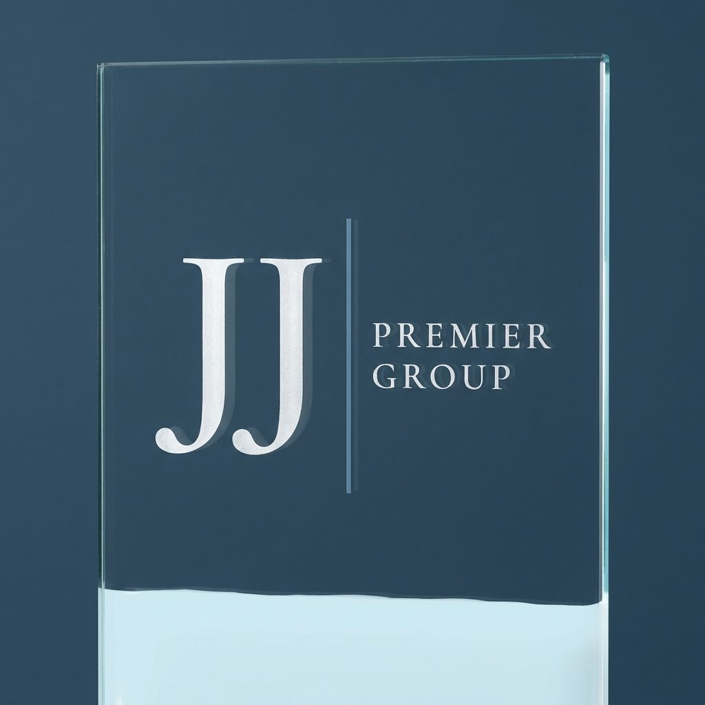
DETAIL THE VERTICAL RULE IS ETCHED, NOT PRINTED
IT READS AS A GROUND LINE THROUGH THE GLASS
IT READS AS A GROUND LINE THROUGH THE GLASS
Powder-coated aluminum, portrait
Deep Harbor powder coat, screened in Linen with a Sky 300 rule. This is the one place the vertical rule replaces the waterline: on a tall panel the crossed lockup fights the format.
PANEL 4MM ACM, RAL-MATCHED TO #1E3442
INK LINEN SCREEN + SKY 300 RULE, 4MM WIDE
INK LINEN SCREEN + SKY 300 RULE, 4MM WIDE
Same panel, square trim
The lockup sits on the lower-left third rather than centred. Square metal centred reads as a plaque; offset reads as architecture.
POSITION LOCKUP AT 38% HEIGHT
CLEARSPACE NEVER LESS THAN JJ CAP HEIGHT
CLEARSPACE NEVER LESS THAN JJ CAP HEIGHT
02 · Paper and press
Blind deboss is the house treatment. No ink, no foil, just the mark pressed into heavy cotton stock so it is felt before it is read. Everything else on paper is a step down from that in cost and a step up in volume.
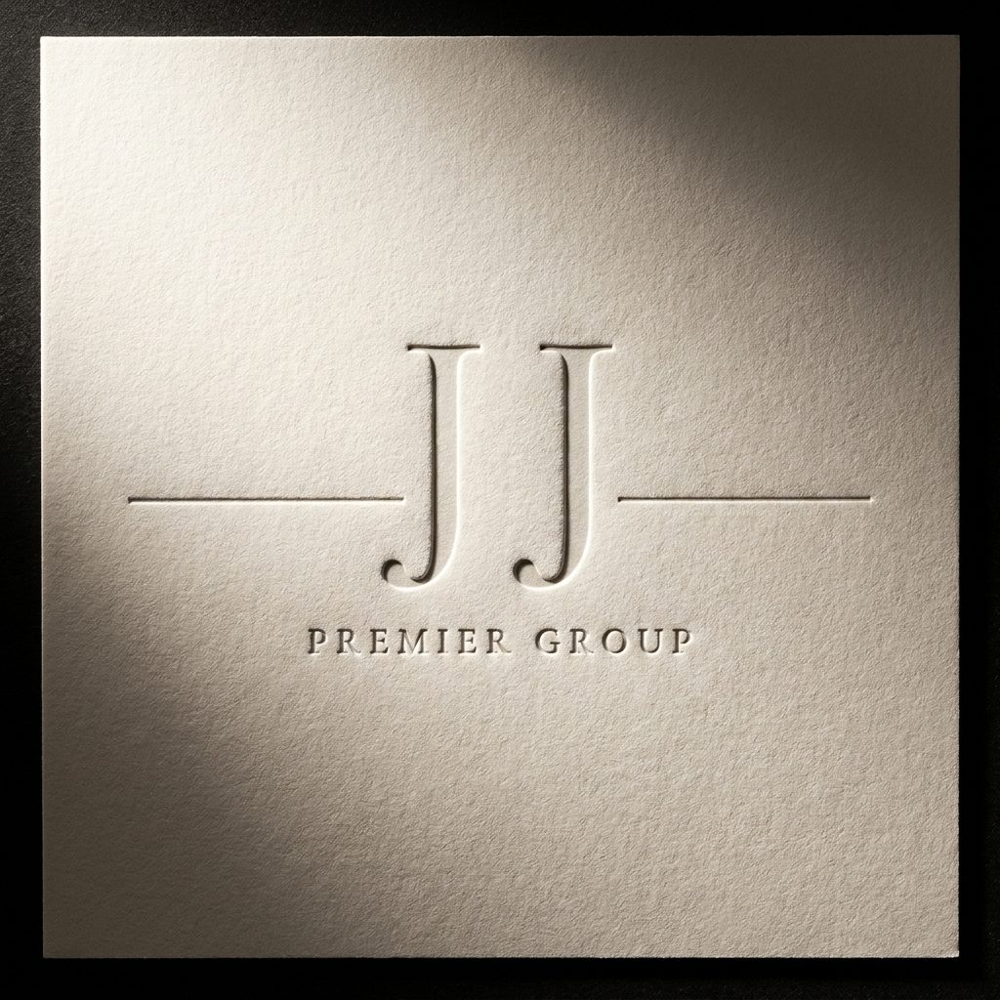
Blind deboss, split rule
No ink at all. The waterline runs through the mark on both sides, which is the lockup this project settled on for centred applications. Raking light is what makes it legible, so it belongs on a desk or in a hand, never on a wall.
STOCK 600GSM COTTON, UNCOATED
DIE BRASS, 0.9MM STRIKE DEPTH
USE NOTECARDS, PRESENTATION FOLIOS, INSERTS
DIE BRASS, 0.9MM STRIKE DEPTH
USE NOTECARDS, PRESENTATION FOLIOS, INSERTS
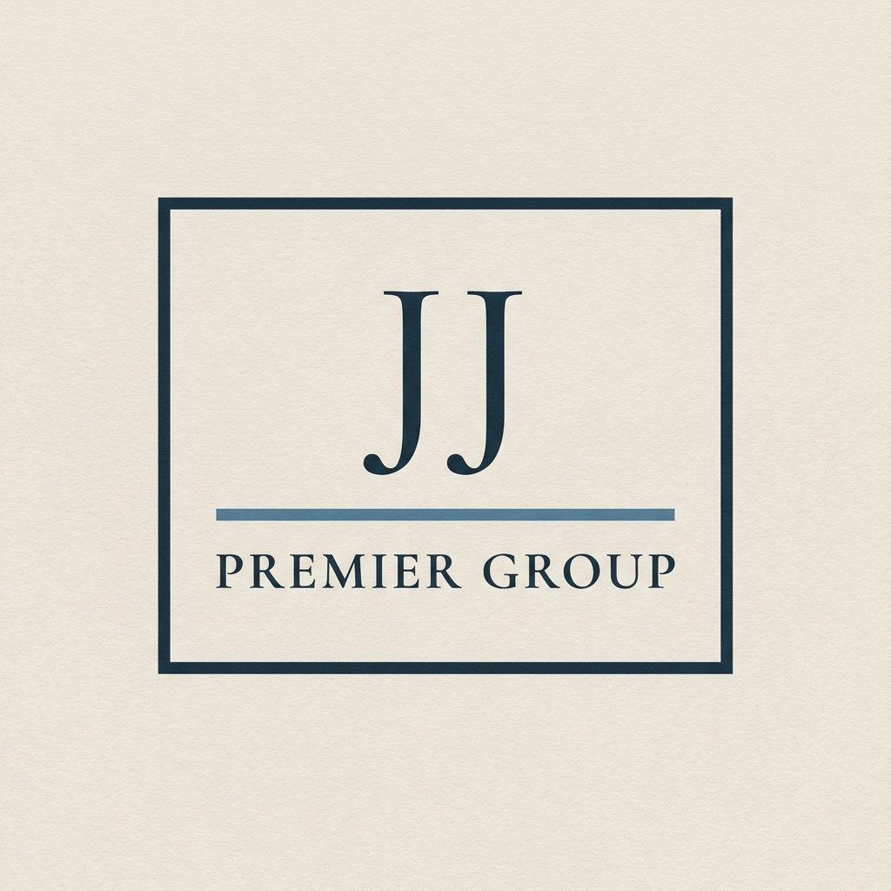
Letterpress, one hit of Deep Harbor
The plate variant: a rule box, the mark inside it, nothing else. Boxes are permitted here and nowhere else in the system, because a plate is a physical object with an actual edge.
INK PANTONE 2166 C, NEAREST TO #1E3442
BOX 1.5MM RULE, 12MM INSET FROM TRIM
BOX 1.5MM RULE, 12MM INSET FROM TRIM
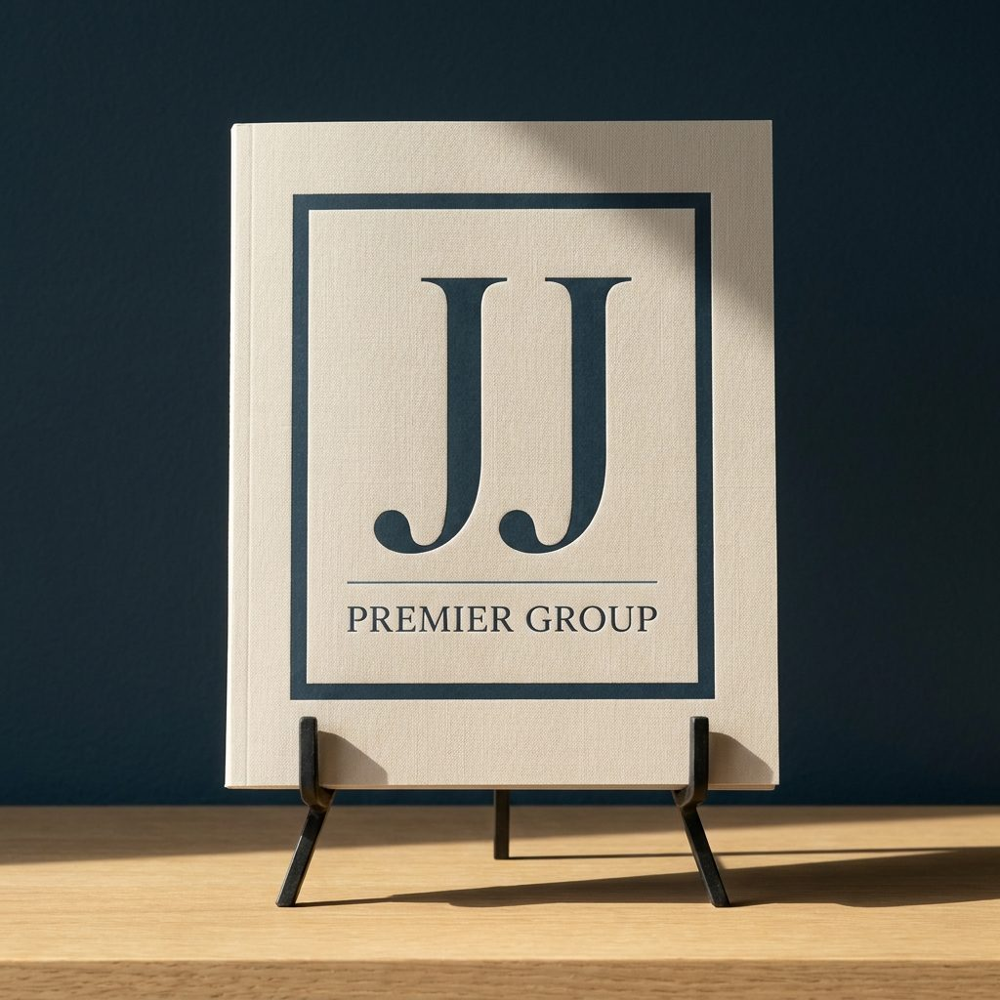
Listing presentation cover
Linen-wrapped board, Deep Harbor foil. Shown on an easel because that is how it gets used: propped on a kitchen island while the numbers are explained.
BOARD 2.5MM, LINEN WRAP
FOIL MATTE NAVY, NOT GLOSS · NEVER GOLD
FOIL MATTE NAVY, NOT GLOSS · NEVER GOLD
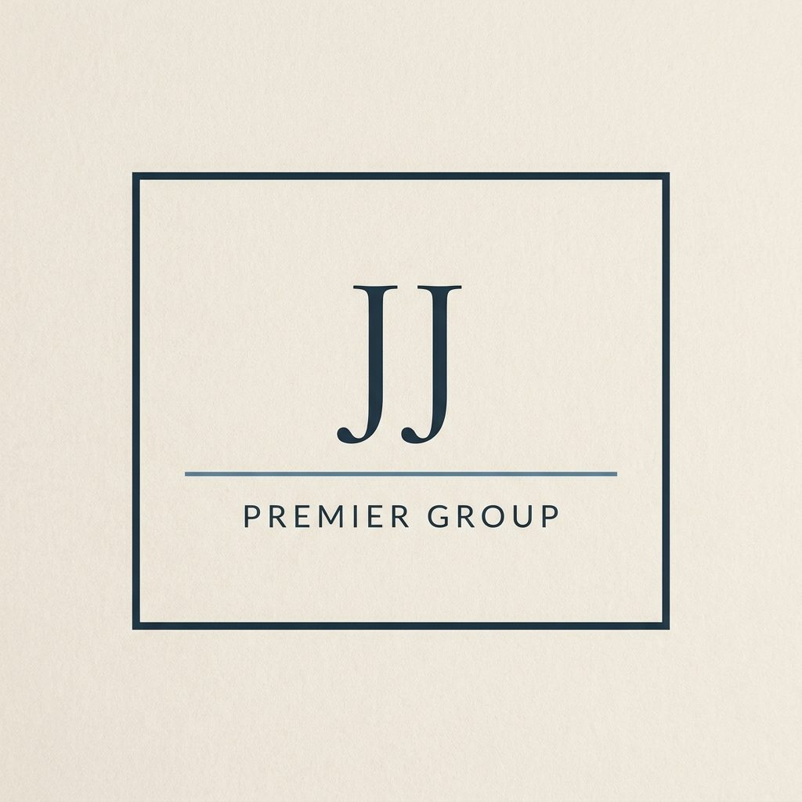
Framed plate, closing gift
The address plate given at closing. Same rule box as the letterpress plate, with the property address set below the mark in Plex Mono and the closing date under it.
TRIM 8 × 10 IN, FITS A STOCK FRAME
PERSONALISE ADDRESS AND DATE ONLY, NO NAMES
PERSONALISE ADDRESS AND DATE ONLY, NO NAMES
03 · Cloth and board
Navy bookcloth, screened
The one reversed cloth in the set. Linen ink on navy weave, Sky 300 waterline running edge to edge. The weave eats fine serifs, so nothing under 12mm cap height.
CLOTH NAVY BOOK LINEN
MIN CAP 12MM ON WOVEN GROUNDS
MIN CAP 12MM ON WOVEN GROUNDS
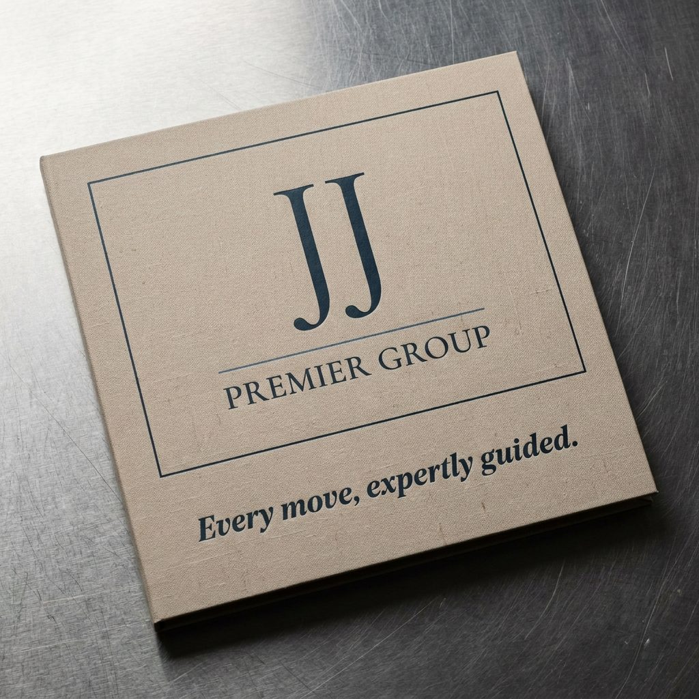
Client folio, portrait
Linen board, navy print, tagline set in italic below the rule box. This is the only piece in the whole system where the tagline sits outside the box, and it works because the box is the mark's frame rather than the page's.
TRIM 9 × 12 IN, TWO POCKETS
TAGLINE ITALIC, BELOW THE BOX, NEVER INSIDE
TAGLINE ITALIC, BELOW THE BOX, NEVER INSIDE
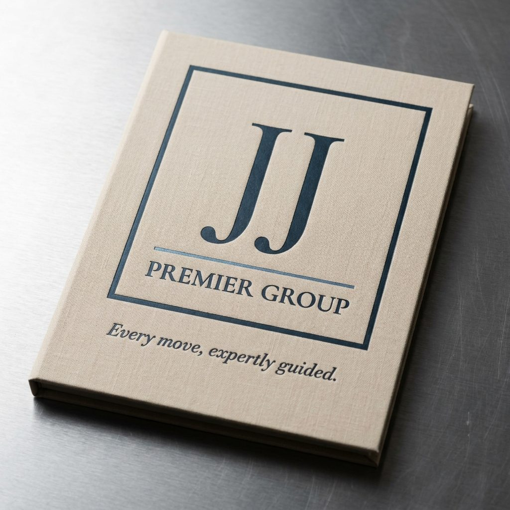
Square folio
Square trim for photography-led presentations, where a 1:1 print block sits inside without cropping. Costs more to mail, so it is reserved for in-person listing appointments.
TRIM 10 × 10 IN
USE LISTING APPOINTMENTS ONLY
USE LISTING APPOINTMENTS ONLY
04 · In the environment
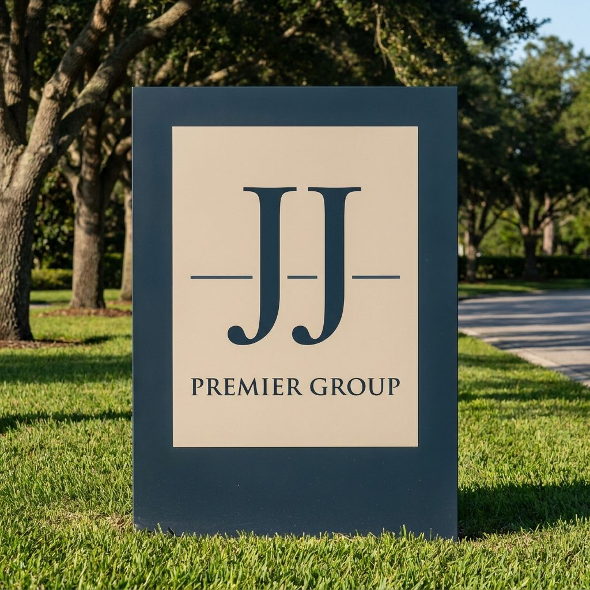
Monument sign
Deep Harbor steel surround, Linen face, mark in navy with the split waterline. Reads from a moving car at 30mph, which is the only performance test that matters on a boulevard.
FACE LINEN, MATTE · NEVER GLOSS
SURROUND POWDER-COATED STEEL #1E3442
JJ CAP HEIGHT 260MM MINIMUM AT 30MPH
SURROUND POWDER-COATED STEEL #1E3442
JJ CAP HEIGHT 260MM MINIMUM AT 30MPH
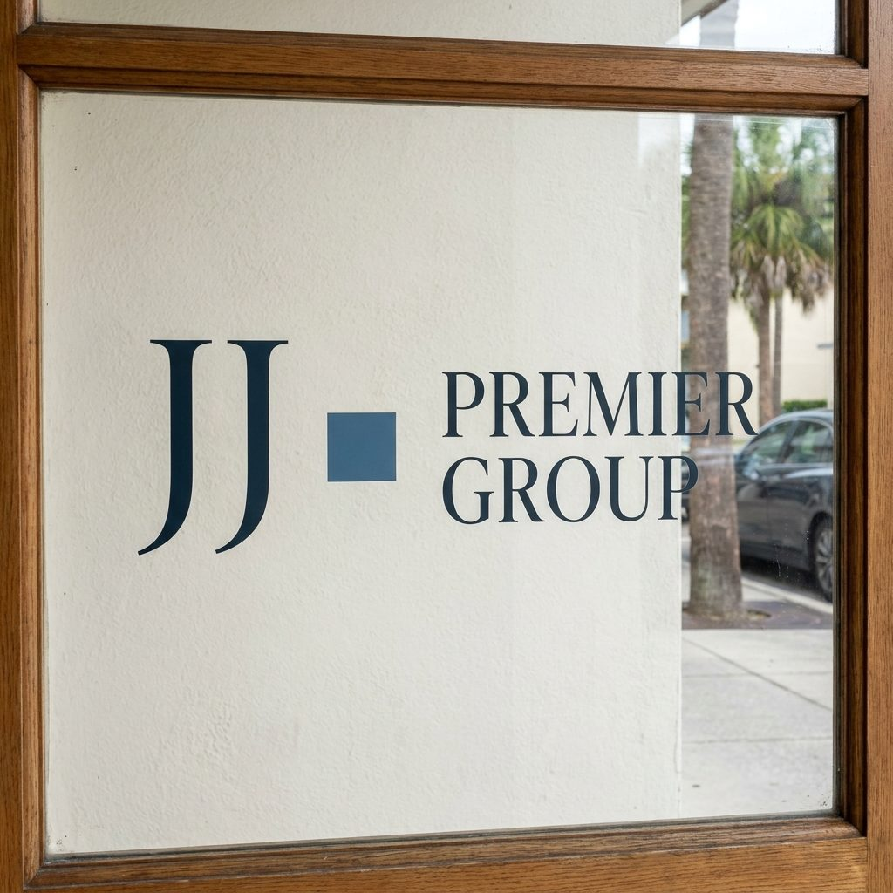
Door and window lettering
Cut navy vinyl, second-surface. The horizontal variant with the Harbor square is the door lockup: at eye level a rule reads as a scratch, a square does not.
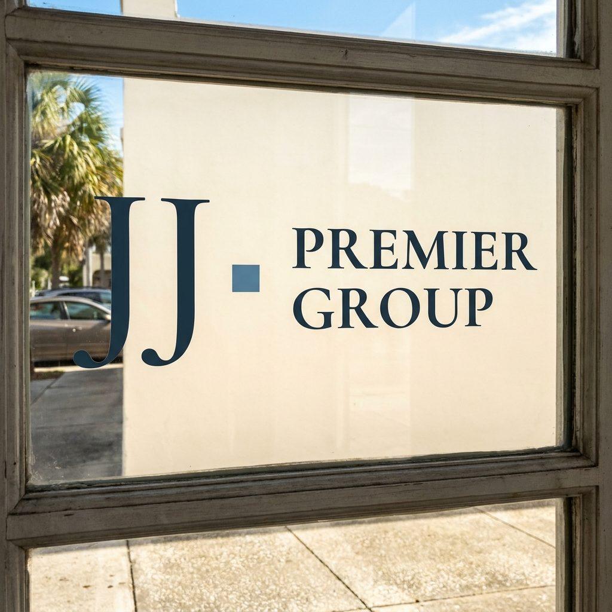
VINYL MATTE CUT, SECOND SURFACE
SET AT 1500MM FROM FLOOR, EYE HEIGHT
REFLECTIONS ARE EXPECTED · KEEP THE MARK CLEAR OF THE MULLION
SET AT 1500MM FROM FLOOR, EYE HEIGHT
REFLECTIONS ARE EXPECTED · KEEP THE MARK CLEAR OF THE MULLION
05 · The seal
The circle is the mark's second form, for anything round, small, or cut into a hard surface. PREMIER GROUP always appears under the rule. A bare JJ inside a ring is not the seal and is not approved.
Primary · Harbor ring
RING #5C86A0 · MARK #1E3442
ON PAPER, LINEN, FLAT ARTWORK
ON PAPER, LINEN, FLAT ARTWORK
On stock
SAME ARTWORK, WARM GROUND
RING STROKE SCALES WITH DIAMETER
RING STROKE SCALES WITH DIAMETER
Reversed · Sky 700
WHITE MARK, SKY 300 RING
EVENTS AND EVENING APPLICATIONS
EVENTS AND EVENING APPLICATIONS
Reversed · wide ring
MORE AIR INSIDE THE RING
USE BELOW 20MM DIAMETER
USE BELOW 20MM DIAMETER
06 · Worth commissioning next
Specified but not yet made. Each one is a real quote request: substrate, process, and the reason it exists.
Brass key fob
Seal on one face, closing date engraved on the other. The keys get handed over on a ring worth keeping, which is the cheapest lasting impression available.
SOLID BRASS, 32MM · LASER ENGRAVED
UNDER $12 AT 100 UNITS
UNDER $12 AT 100 UNITS
Wax seal and stamp
Deep Harbor wax on the outside of the offer envelope. In a stack of emailed PDFs, a sealed envelope is the one that gets opened first.
25MM BRASS HEAD · WIDE-RING SEAL ART
WAX MATCHED TO #1E3442
WAX MATCHED TO #1E3442
Vehicle decal
Horizontal lockup with the Harbor square, cut vinyl on the rear quarter glass. No phone number, no website. A car is not a billboard.
MATTE WHITE OR NAVY CUT VINYL
280MM WIDE · ONE PER VEHICLE
280MM WIDE · ONE PER VEHICLE
Sandblasted stone
Coquina or shell limestone for a permanent office marker. Florida vernacular, and the only substrate on this page that will outlive the brand.
SEAL ONLY · 8MM SANDBLAST DEPTH
NO PAINT FILL, LET SHADOW DO IT
NO PAINT FILL, LET SHADOW DO IT
Embroidered cap and polo
Open-house wear. Embroidery cannot hold the two-line lockup, so the seal is the only option, and the ring needs a satin stitch to stay round.
SEAL AT 55MM · SATIN-STITCH RING
LINEN THREAD ON NAVY GARMENT ONLY
LINEN THREAD ON NAVY GARMENT ONLY
Closing gift box
Rigid navy box, blind-debossed lid, Linen grosgrain ribbon. Holds the framed address plate and the key fob, which is the whole closing ritual in one object.
RIGID BOARD, 10 × 12 × 2 IN
RIBBON 25MM, LINEN #E6DDD1
RIBBON 25MM, LINEN #E6DDD1
07 · Rules for anything physical
One process per piece
Foil or deboss or ink, never two together and never all three. A single treatment executed properly always outclasses a stack of them.
Matte, always
Matte foil, matte vinyl, matte sign faces, satin brass. Gloss reads as a franchise print shop under any light, and outdoors it turns into glare.
The seal handles small and round
Under 40mm, or on any curved or woven surface, the two-line lockup gives way to the seal. Always with PREMIER GROUP under the rule.
No gold, ever
Satin brass is a substrate; gold foil is a decoration. Brass is permitted because it is the actual metal. Gold ink and gold foil are not in the system.
Before you order
These are design intents, not press proofs. Every substrate shifts color: brass warms Deep Harbor, navy powder coat drifts green under LED, and Linen on woven cloth prints half a tone darker than on paper. Ask for a physical proof on the real material before any run over 50 units, and check the Coldwell Banker mark placement against current franchise rules on anything permanent.